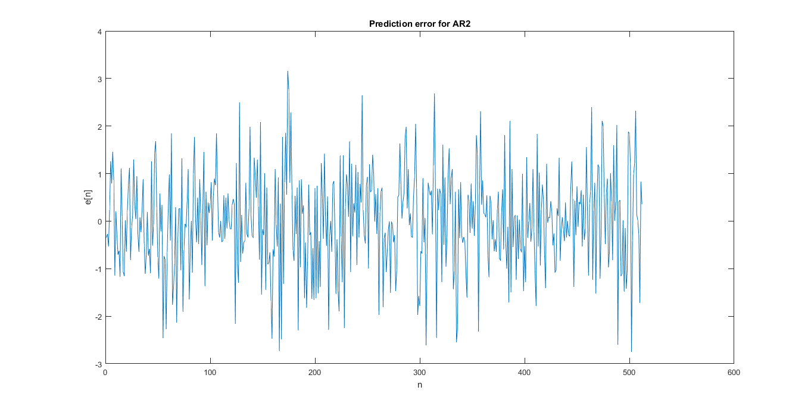
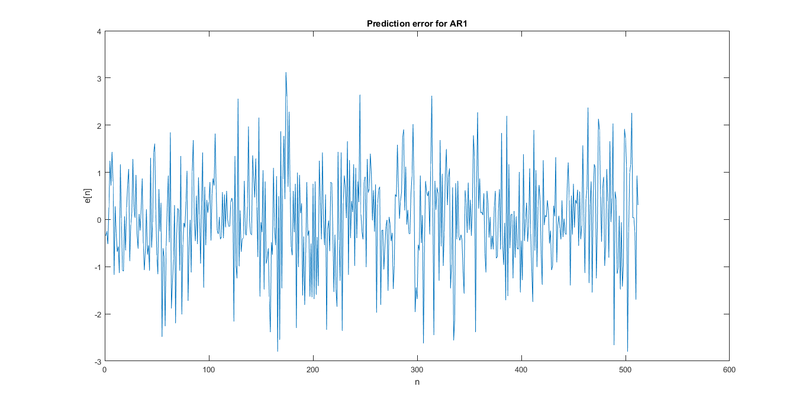
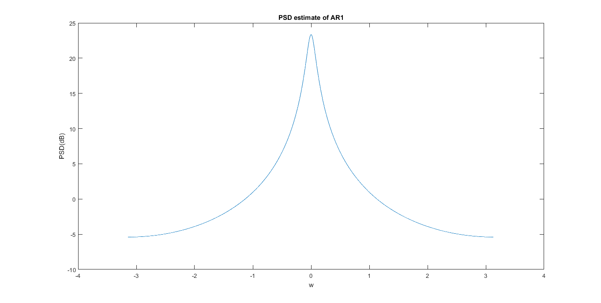
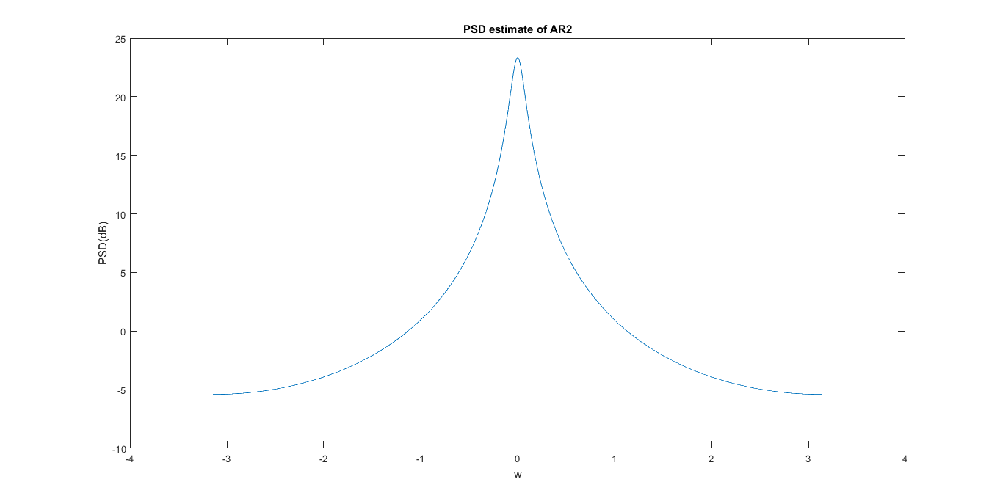
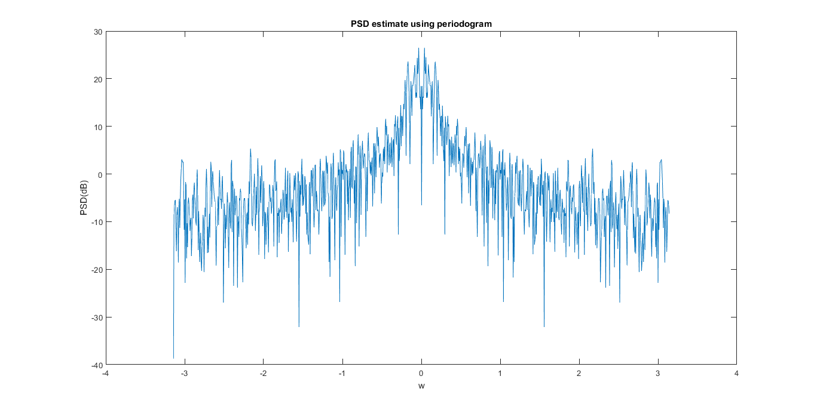
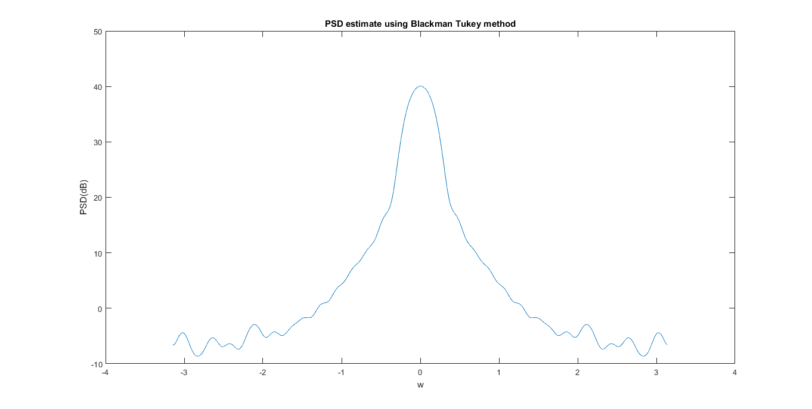

EE 779: Assignment 1: Q.1
Contents
- Kalpesh Patil
- 130040019
- Q1 (a): 3×3 Toeplitz correlation matrix for the signal data using
- Q1 (b): Second order linear prediction parameters and error
- Q1 (c): Error signal
- Q1 (d): first order linear prediction filter
- Q1 (e): AR spectral plot for first order model
- Q1 (f): AR spectral plot for second order model
- Q1 (g): Periodogram Method and best method
Kalpesh Patil
130040019
close all clear all % read input data x = getdata('../assgn1_data/assgn1_data/S01.dat'); x = x';
Q1 (a): 3×3 Toeplitz correlation matrix for the signal data using
Autocorrelation matrix
p = 2;
r = find_correlation(x);
Rxx_autocorr_AR2 = [r(1) r(2) r(3),
r(2) r(1) r(2),
r(3) r(2) r(1)];
% Rxx_autocorr_AR2
Rxx_autocorr_AR2
Rxx_autocorr_AR2 =
7.8935 7.3366 6.8760
7.3366 7.8935 7.3366
6.8760 7.3366 7.8935
Q1 (b): Second order linear prediction parameters and error
% Second order filter parameters are obtained by solving Yule-Walker % equation. Prediction error variance is found. temp = Rxx_autocorr_AR2(2:end,2:end); r_AR2 = -[r(2),r(3)]'; a_AR2 = inv(temp)*r_AR2; a_AR2 = [1,a_AR2.']'; error_sq_AR2 = 0; for j = 1:p+1 error_sq_AR2 = error_sq_AR2 + a_AR2(j)*conj(r(j)); end error_AR2 = sqrt(abs(error_sq_AR2)); error_sq_AR2 a_AR2
error_sq_AR2 =
1.0714
a_AR2 =
1.0000
-0.8802
-0.0530
Q1 (c): Error signal
After applying filer to othe original data, error signal was calculated. The variance of this error signal was found apporximately equal to the theoritical value calculated in parta(a). Percentage chhange is found to be 0.28%.
err_pred_AR2 = zeros(length(x),1); err_pred_AR2 = a_AR2(1)*x + (a_AR2(2)*[0 x(1:end-1)'] + a_AR2(3)*[0 0 x(1:end-2)'])'; error_sq_pred_AR2 = var(err_pred_AR2); error_sq_pred_AR2 error_sq_AR2 percentage_change = (error_sq_pred_AR2 - error_sq_AR2)/error_sq_AR2; percentage_change fig = figure(); plot(err_pred_AR2); title('Prediction error for AR2'); xlabel('n'); ylabel('e[n]'); set(gcf, 'Position', get(0, 'Screensize')); saveas(fig,'../results/Q1/Prediction error for AR2','jpg');
error_sq_pred_AR2 =
1.0684
error_sq_AR2 =
1.0714
percentage_change =
-0.0028
 Q1 (d): first order linear prediction filter
First order parameters are found out. It is found that prediction error variance for first order (1.0744) is more than that of second order (1.0714) calculated in part(a). Note that the difference between theoritical value and calculated value of error is same for both AR1 and AR2
p = 1; Rxx_autocorr_AR1 = Rxx_autocorr_AR2(1:2,1:2); Rxx_autocorr_AR1 temp = Rxx_autocorr_AR1(2:end,2:end); r_AR1 = -[r(2)]'; a_AR1 = inv(temp)*r_AR1; a_AR1 = [1,a_AR1.']'; error_sq_AR1 = 0; for j = 1:p+1 error_sq_AR1 = error_sq_AR1 + a_AR1(j)*conj(r(j)); end error_AR1 = sqrt(abs(error_sq_AR1)); error_sq_AR1 error_sq_AR2 % prediction using AR1 err_pred_AR1 = zeros(length(x),1); err_pred_AR1 = a_AR1(1)*x + (a_AR1(2)*[0 x(1:end-1)'])'; error_sq_pred_AR1 = var(err_pred_AR1); fig = figure(); plot(err_pred_AR1); title('Prediction error for AR1'); xlabel('n'); ylabel('e[n]'); set(gcf, 'Position', get(0, 'Screensize')); saveas(fig,'../results/Q1/Prediction error for AR1','jpg');
Rxx_autocorr_AR1 =
7.8935 7.3366
7.3366 7.8935
error_sq_AR1 =
1.0744
error_sq_AR2 =
1.0714
 Q1 (e): AR spectral plot for first order model
[h,w] = freqz(error_AR1,[a_AR1.'],'whole',1024); psd_AR1 = (abs(fftshift(h))).^2; freq = w - pi; plot(freq,10*log10(psd_AR1)); title('PSD estimate of AR1'); xlabel('w'); ylabel('PSD(dB)'); set(gcf, 'Position', get(0, 'Screensize')); saveas(fig,'../results/Q1/PSD estimate of AR1','jpg');
Q1 (f): AR spectral plot for second order model
[h,w] = freqz(error_AR2,[a_AR1.'],'whole',1024); psd_AR2 = (abs(fftshift(h))).^2; freq = w - pi; plot(freq,10*log10(psd_AR2)); title('PSD estimate of AR2'); xlabel('w'); ylabel('PSD(dB)'); set(gcf, 'Position', get(0, 'Screensize')); saveas(fig,'../results/Q1/PSD estimate of AR2','jpg');
Q1 (g): Periodogram Method and best method
PSD estimates using periodogram method (N = 512) and Blackman Tukey (best method in Assignment 1). It is observed that AR models perform better in terms of modelling actual PSD compared to other nonparametric methods in this case. This signifies that the signal is indeed an AR process (which is true, as it was told in Assignment 1, it is an AR1 process). We can compare PSD estimates with the true signal PSD which was calculated in assignment_1.
fft_len = 1024; N = 512; % zero padding signal x_padded = zeros(fft_len,1); x_padded(1:N) = x(1:N); fft_xN = fftshift(fft(x_padded, fft_len)); psd_prdgrm = (abs(fft_xN).^2)/N; fig = figure; freq = linspace(-pi,pi,fft_len); plot(freq,10*log10(psd_prdgrm)); title('PSD estimate using periodogram'); xlabel('w'); ylabel('PSD(dB)'); set(gcf, 'Position', get(0, 'Screensize')); saveas(fig,'../results/Q1/PSD estimate using periodogram','jpg'); % Best method (Blacman Tukey) from Assignment 1 N = length(x); M = 32; fft_len = 1024; rxw_padded = zeros(fft_len,1); rx_pos = find_correlation(x); pos_len = length(x); rx = zeros(2*pos_len - 1,1); rx(pos_len) = rx_pos(1); for t = 2:length(rx_pos) rx(pos_len + t - 1) = rx_pos(t); rx(pos_len - t + 1) = rx_pos(t); end w = zeros(length(rx),1); w(N - M : N + M) = bartlett(2*M + 1); rxw_padded(1:length(rx)) = rx.*w; psd_bmt_32 = (abs(fftshift(fft(rxw_padded,fft_len)))).^2; fig = figure; freq = linspace(-pi,pi,fft_len); plot(freq,10*log10(psd_bmt_32)); title('PSD estimate using Blackman Tukey method'); xlabel('w'); ylabel('PSD(dB)'); set(gcf, 'Position', get(0, 'Screensize')); saveas(fig,'../results/Q1/PSD estimate using Blackman Tukey method','jpg'); 